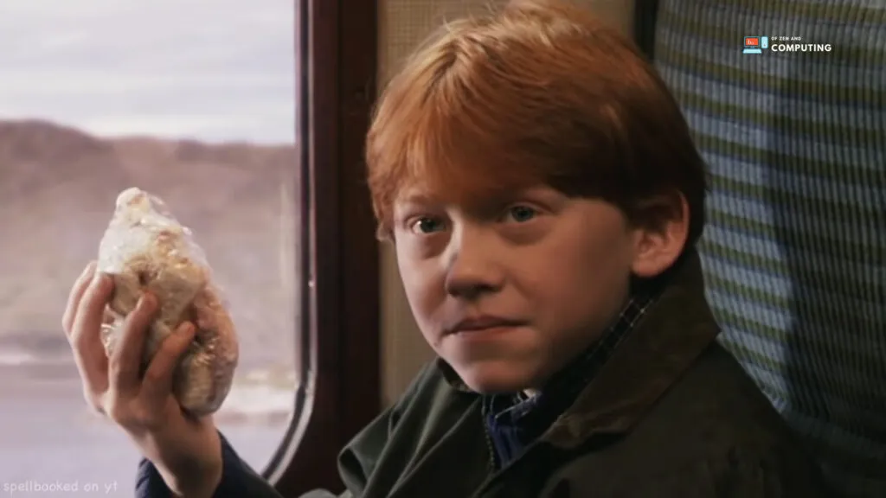

One of the most beloved characters in the Harry Potter series is Ron Weasley, thanks to his unwavering loyalty and close friendship with the main character. Ron, a member of the large, loving Weasley family, has red hair and humble origins. As a student at Hogwarts, he is sorted into Gryffindor and quickly becomes friends with Harry Potter and Hermione Granger.
Throughout the series, Ron is portrayed as having a strong moral compass and an innate ability to persevere through adversity. He shows great courage in the face of dangerous situations and plays a vital role in defeating Lord Voldemort. Ron's relationship with Hermione Granger develops over time, culminating in a romantic partnership towards the end of the series.
